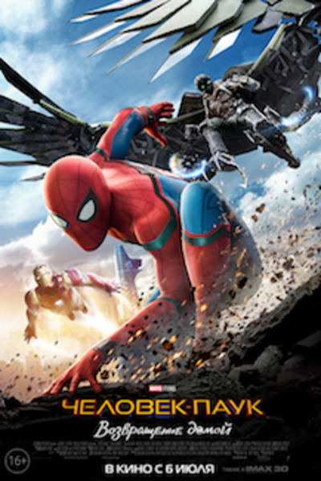
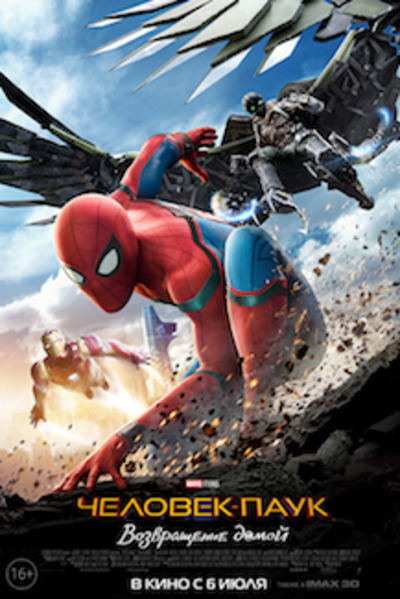

Человек Паук
Когда обычного подростка Питера Паркера укусил радиоактивный паук, его жизнь полностью
изменилась.
Теперь он борется с преступностью, скрываясь под маской Человека-Паука.
Ещё ребёнком Питер Паркер лишился родителей, а тётя Мэй и дядя Бен вырастили его как родного
сына.
Мальчик хорошо учился и добился больших успехов в естественных науках, из-за чего
одноклассники не
воспринимали его всерьёз, считая тихоней и зубрилой. На одной из научных выставок Питера
укусил
паук, заряженный мощной дозой радиации. Укус повлиял на генетическую структуру организма
Питера,
наделив парня суперсилой и уникальными способностями.
Желая заработать на своих новых силах, Питер сделал себе уникальный костюм и начал
участвовать в
боях без правил. Возвращаясь после очередной схватки, Питер отказался остановить грабителя,
посчитав, что этим делом должна заниматься полиция. Позже этот же преступник наткнулся на
дядю Бена
и застрелил его, когда тот попытался дать ему отпор. Тогда Питер поклялся использовать свои
силы для
борьбы с преступностью, всегда держа в памяти слова дяди: «С великой силой приходит и
великая
ответственность».Человек-Паук обладает множеством уникальных способностей и является одним
из самых
сильных супергероев. Он может передвигаться по стенам и потолку, легко поднять предмет весом
в
десять тонн. Комбинация из акробатических трюков и искусственной паутины позволяет ему
быстро
двигаться, а сверхбыстрые рефлексы и «паучье» чутьё, помогают ему избегать ранений и
предугадывать
действия противника.
Ещё до укуса паука Питер Паркер был одним из самых умных людей на планете, его IQ близок к
гениальности. Он прекрасно разбирается в химии, физике, биологии и инженерии. Благодаря
обширным
познаниям в инженерии, Питер смог самостоятельно усовершенствовать свой костюм веб-шутерами
с
сверхпрочной искусственной паутиной.

 
